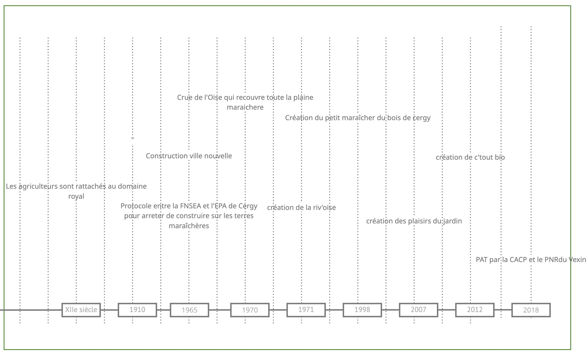
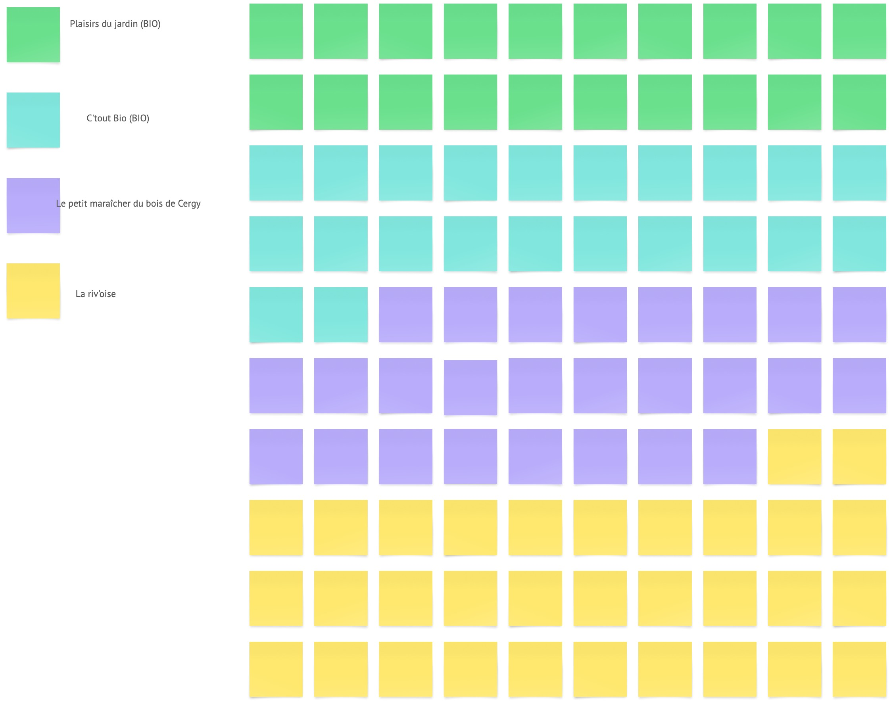
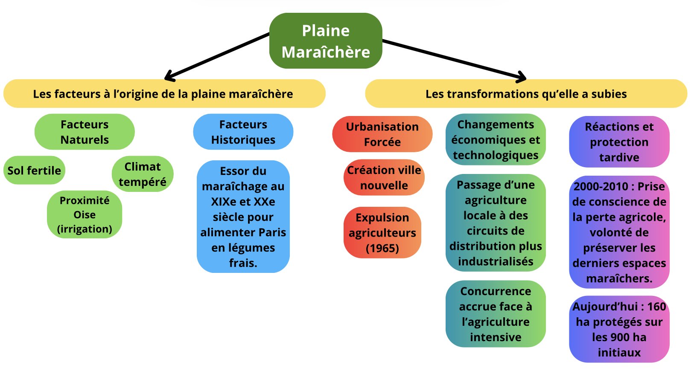
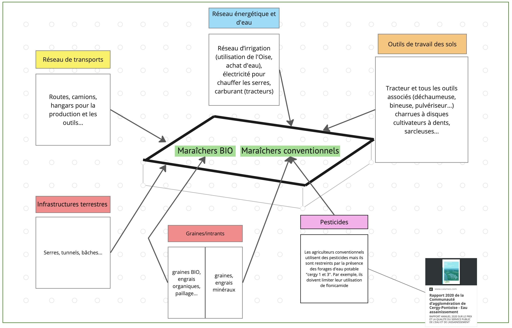
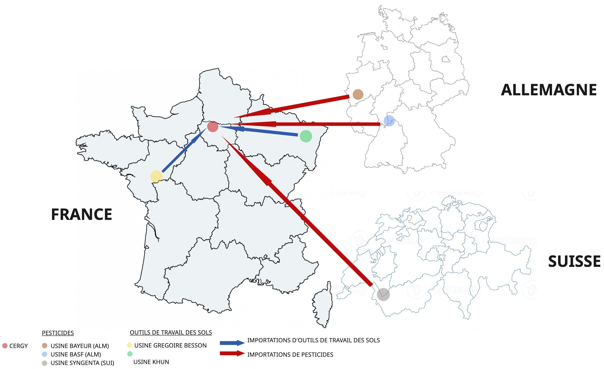

En quoi l'évolution de la technique a-t-elle influencée les pratiques agricoles et comment celles-ci cohabitent-elles aujourd'hui dans la plaine maraîchère ?
Par Roman LEIBA, Mila DOMANINE, Emil TAFER, Andreas MOURIKIS et Ludivine RICHIR

Introduction
Nous avons choisi d’étudier la plaine maraîchère de Cergy, un espace agricole situé à la bordure de la ville nouvelle. Lors de la création de cette ville nouvelle, cet espace a été conservé afin de maintenir une activité agricole locale. Nous savons aujourd’hui que cet espace doit faire face à différents enjeux liés à l’urbanisation, à l’environnement et l’organisation du territoires qui évolue. Ces enjeux ouvrent le débat et créent des tensions entre les partisans de la préservation de l’agriculture locale et ceux pour l’expansion urbaine. La plaine maraîchère de Cergy est un exemple de milieu technique car elle dépend de nombreux aménagements et de choix techniques tels que ses réseaux d’irrigation et ses infrastructures agricoles. Dès lors il nous semble légitime de poser la problématique suivante :
En quoi l'évolution de la technique a t'elle influencé les pratiques agricoles et comment celles ci cohabitent aujourd'hui dans la plaine maraîchère ?
Cartographie du milieu
↘︎ Frise chronologique
↘︎ Pourcentage de la surface occupée par chaque maraîchers
↘︎ Facteurs de transformation influant la plaine maraîchère
↘︎ Dépendance matérielles
↘︎ Approvisionnement des maraîchers
Explications
Pour répondre visuellement à notre problématique, nous avons traité le sujet sous plusieurs angles. Une première cartographie détaille l'avancée chronologique de la plaine maraîchère, retraçant l'histoire de sa création au XIIe siècle à aujourd'hui. On voit spécifiquement les dates de fondation de chacune des 4 exploitations et on remarque que les installations BIO sont les 2 plus récentes. S'ajoute à ce premier élément une répartition (en %) des parcelles de terre de chaque maraicher dans la plaine. Ici, on voit que les maraîchers conventionnels occupent approximativement 58% de l'ensemble de la plaine. La représentation en carrés de différentes couleurs permet de bien visualiser la place que prend chaque exploitant dans l'espace d'à peu près 62 ha. Ces deux cartographies permettent de poser un décor spatio-temporel de la plaine avec des informations clés et commencent à détailler la cohabitation de deux techniques sur une même surface.
Ensuite vient un schéma des facteurs et transformations influant sur la plaine maraîchère. Celui ci détaille les origines de cet espace, insistant sur l'influence de la nature sur sa création. Cependant, dans un second temps, il explique les modifications résultant de facteurs extérieurs : on voit que ceux ci sont plus intimement liés à la technique. On comprend alors que les éléments à l'origine de la formation et transformation de cette plaine sont multiples, et que bien que la technique joue un rôle important dans celles-ci, elle ne semble pas en être l'unique contributrice.
Les deux dernières cartographies se concentrent justement sur la dépendance de cet espace nourricier à la technique, à travers différentes représentations. La cartographie des dépendances matérielles fait la distinction entre les besoins des maraîchers bio et conventionnels, qui ne sont pas toujours similaires. On constate là encore la cohabitation plus ou moins harmonieuse de deux modèles différents. Suite à cette représentation, une carte montre les flux d'approvisionnement de pesticides et d'outils des exploitants. Faisant écho à la précédente, cette cartographie révèle l'omniprésence de la technique dans le fonctionnement de cet espace aujourd'hui : la plaine maraîchère repose aujourd'hui sur des matériaux et savoirs multiples. Elle a suivi docilement l'évolution de la technique, faisant à présent partie d'un système mondialisé, international et complexe.
Ces cartographies apportent de multiples éléments de réponse à notre problématique : la plaine maraîchère est tramée par deux grandes "écoles" de techniques, qui reposent elles mêmes sur un réseau complexe et mondialisé d'outils qui leur sont propres.
Sources
- https://www.cergy.fr/notre-ville/rester-informe/actualites/les-maraichers-cergyssois-2984/
- https://journals.openedition.org/vertigo/11188#tocto3n2
- https://www.memoireonline.com/06/07/494/m_recomposition-rapports-ville-campagne-ile-de-france-zone-maraichere-cergy3.html#toc7
- https://storymaps.arcgis.com/stories/dc21d593b75c442c93a5885196c35831
- https://www.calameo.com/cergypontoise-agglo/read/000758763b81dc4684433
- 2018 : PRIF de l'IDF (protection des espaces agricoles)
- [Entretien] Plaisirs du Jardin (maraîchère de la plaine de Cergy) : Beaucoup de reprises d'exploitation (familial), plaine maraîchère excentrée de la ville, "cachée". Depuis le lancement du PAT en 2018, la CACP considère "enfin" que la plaine maraîchère est "le dernier poumon vert de la ville
- [Entretien] CACP (travaille à la direction de projets transition écologique) : L'agglo est propriétaire terrien de 3000ha qu'elle loue aux agriculteurs. Parmi une 30aine d'agriculteurs installés, il n'y a que 3 maraîchers. Elle souhaite que plus d'agriculteurs conventionnels se reconvertissent ou que de nouveaux maraîchers arrivent mais il y a un problème d'attractivité (terrain très cher en IDF). Elle reçoit de l'aide du GAB IDF pour former les agriculteurs au BIO.